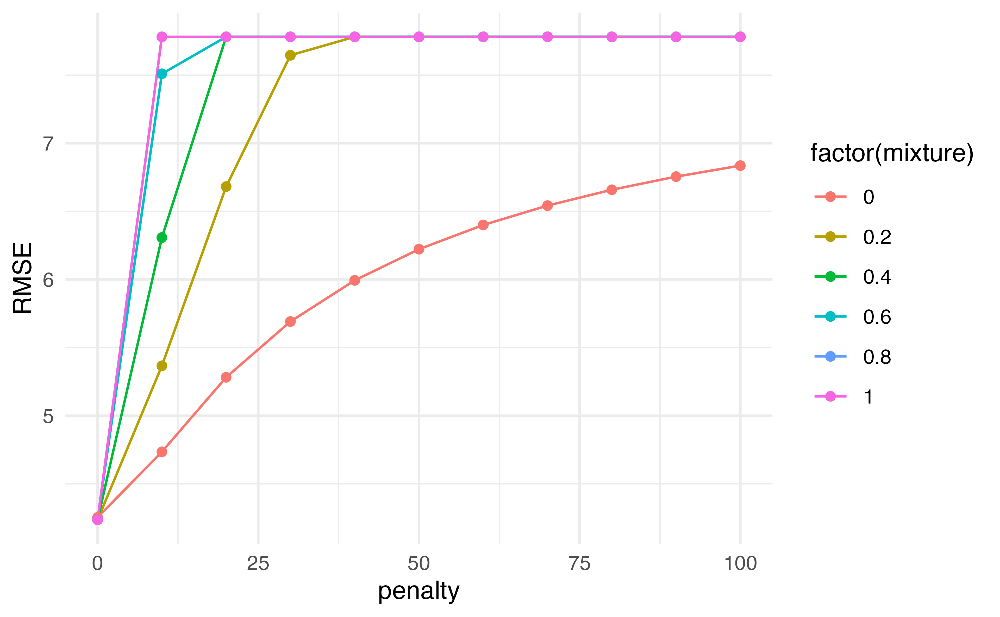
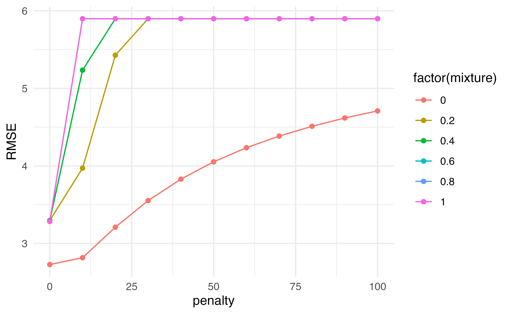

Linear Regression Model Specification (regression)
Computational engine: lm tidymodels
Application Exercise
tidymodels
Validation set approach
A faster way!
- You can use
last_fit()and specify the split - This will automatically train the data on the
traindata from the split - Instead of specifying which metric to calculate (with
rmseas before) you can just usecollect_metrics()and it will automatically calculate the metrics on thetestdata from the split
A faster way!
set.seed(100)
Auto_split <- initial_split(Auto, prop = 0.5)
lm_fit <- last_fit(lm_spec,
mpg ~ horsepower,
split = Auto_split)
lm_fit |>
collect_metrics() # A tibble: 2 × 4
.metric .estimator .estimate .config
<chr> <chr> <dbl> <chr>
1 rmse standard 4.96 Preprocessor1_Model1
2 rsq standard 0.613 Preprocessor1_Model1What about cross validation?
What if we wanted to do some preprocessing
- For the shrinkage methods we discussed it was important to scale the variables
What does this mean?
What would happen if we scale before doing cross-validation? Will we get different answers?
What if we wanted to do some preprocessing
What if we wanted to do some preprocessing
recipe()!- Using the
recipe()function along withstep_*()functions, we can specify preprocessing steps and R will automagically apply them to each fold appropriately.
Where do we plug in this recipe?
- The
recipegets plugged into thefit_resamples()function
Auto_cv <- vfold_cv(Auto, v = 5)
rec <- recipe(mpg ~ horsepower, data = Auto) |>
step_scale(horsepower)
results <- fit_resamples(lm_spec,
preprocessor = rec,
resamples = Auto_cv)
results |>
collect_metrics()# A tibble: 2 × 6
.metric .estimator mean n std_err .config
<chr> <chr> <dbl> <int> <dbl> <chr>
1 rmse standard 4.91 5 0.233 Preprocessor1_Model1
2 rsq standard 0.615 5 0.0313 Preprocessor1_Model1What if we want to predict mpg with more variables
- Now we still want to add a step to scale predictors
- We could either write out all predictors individually to scale them
- OR we could use the
all_predictors()short hand.
Putting it together
rec <- recipe(mpg ~ horsepower + displacement + weight, data = Auto) |>
step_scale(all_predictors())
results <- fit_resamples(lm_spec,
preprocessor = rec,
resamples = Auto_cv)
results |>
collect_metrics()# A tibble: 2 × 6
.metric .estimator mean n std_err .config
<chr> <chr> <dbl> <int> <dbl> <chr>
1 rmse standard 4.24 5 0.206 Preprocessor1_Model1
2 rsq standard 0.711 5 0.0148 Preprocessor1_Model1What if we have categorical variables?
- We can turn the categorical variables into indicator (“dummy”) variables in the recipe
What if we have missing data?
- We can remove any rows with missing data
What if we have missing data?
Ridge, Lasso, and Elastic net
When specifying your model, you can indicate whether you would like to use ridge, lasso, or elastic net. We can write a general equation to minimize:
\[RSS + \lambda\left((1-\alpha)\sum_{i=1}^p\beta_j^2+\alpha\sum_{i=1}^p|\beta_j|\right)\]
- First specify the engine. We’ll use
glmnet - The
linear_reg()function has two additional parameters,penaltyandmixture penaltyis \(\lambda\) from our equation.mixtureis a number between 0 and 1 representing \(\alpha\)
Ridge, Lasso, and Elastic net
\[RSS + \lambda\left((1-\alpha)\sum_{i=1}^p\beta_j^2+\alpha\sum_{i=1}^p|\beta_j|\right)\]
What would we set mixture to in order to perform Ridge regression?
Ridge, Lasso, and Elastic net
\[RSS + \lambda\left((1-\alpha)\sum_{i=1}^p\beta_j^2+\alpha\sum_{i=1}^p|\beta_j|\right)\]
Okay, but we wanted to look at 3 different models!
tune 🎶
- Notice the code above has
tune()for the the penalty and the mixture. Those are the things we want to vary!
tune 🎶
- Now we need to create a grid of potential penalties ( \(\lambda\) ) and mixtures ( \(\alpha\) ) that we want to test
- Instead of
fit_resamples()we are going to usetune_grid()
tune 🎶
# A tibble: 132 × 8
penalty mixture .metric .estimator mean n std_err .config
<dbl> <dbl> <chr> <chr> <dbl> <int> <dbl> <chr>
1 0 0 rmse standard 4.25 5 0.217 Preprocessor1_Model01
2 0 0 rsq standard 0.710 5 0.0171 Preprocessor1_Model01
3 10 0 rmse standard 4.74 5 0.246 Preprocessor1_Model02
4 10 0 rsq standard 0.706 5 0.0193 Preprocessor1_Model02
5 20 0 rmse standard 5.28 5 0.255 Preprocessor1_Model03
6 20 0 rsq standard 0.705 5 0.0194 Preprocessor1_Model03
7 30 0 rmse standard 5.69 5 0.258 Preprocessor1_Model04
8 30 0 rsq standard 0.705 5 0.0195 Preprocessor1_Model04
9 40 0 rmse standard 5.99 5 0.260 Preprocessor1_Model05
10 40 0 rsq standard 0.705 5 0.0195 Preprocessor1_Model05
# ℹ 122 more rowsSubset results
# A tibble: 66 × 8
penalty mixture .metric .estimator mean n std_err .config
<dbl> <dbl> <chr> <chr> <dbl> <int> <dbl> <chr>
1 0 0.6 rmse standard 4.24 5 0.207 Preprocessor1_Model34
2 0 0.4 rmse standard 4.24 5 0.207 Preprocessor1_Model23
3 0 1 rmse standard 4.24 5 0.207 Preprocessor1_Model56
4 0 0.8 rmse standard 4.24 5 0.207 Preprocessor1_Model45
5 0 0.2 rmse standard 4.24 5 0.207 Preprocessor1_Model12
6 0 0 rmse standard 4.25 5 0.217 Preprocessor1_Model01
7 10 0 rmse standard 4.74 5 0.246 Preprocessor1_Model02
8 20 0 rmse standard 5.28 5 0.255 Preprocessor1_Model03
9 10 0.2 rmse standard 5.37 5 0.258 Preprocessor1_Model13
10 30 0 rmse standard 5.69 5 0.258 Preprocessor1_Model04
# ℹ 56 more rows- Since this is a data frame, we can do things like filter and arrange!
Subset results
# A tibble: 66 × 8
penalty mixture .metric .estimator mean n std_err .config
<dbl> <dbl> <chr> <chr> <dbl> <int> <dbl> <chr>
1 0 0.6 rmse standard 4.24 5 0.207 Preprocessor1_Model34
2 0 0.4 rmse standard 4.24 5 0.207 Preprocessor1_Model23
3 0 1 rmse standard 4.24 5 0.207 Preprocessor1_Model56
4 0 0.8 rmse standard 4.24 5 0.207 Preprocessor1_Model45
5 0 0.2 rmse standard 4.24 5 0.207 Preprocessor1_Model12
6 0 0 rmse standard 4.25 5 0.217 Preprocessor1_Model01
7 10 0 rmse standard 4.74 5 0.246 Preprocessor1_Model02
8 20 0 rmse standard 5.28 5 0.255 Preprocessor1_Model03
9 10 0.2 rmse standard 5.37 5 0.258 Preprocessor1_Model13
10 30 0 rmse standard 5.69 5 0.258 Preprocessor1_Model04
# ℹ 56 more rowsWhich would you choose?
results |>
collect_metrics() |>
filter(.metric == "rmse") |>
ggplot(aes(penalty, mean, color = factor(mixture), group = factor(mixture))) +
geom_line() +
geom_point() +
labs(y = "RMSE")

Putting it all together
- Often we can use a combination of all of these tools together
- First split our data
- Do cross validation on just the training data to tune the parameters
- Use
last_fit()with the selected parameters, specifying the split data so that it is evaluated on the left out test sample
Putting it all together
auto_split <- initial_split(Auto, prop = 0.5)
auto_train <- training(auto_split)
auto_cv <- vfold_cv(auto_train, v = 5)
rec <- recipe(mpg ~ horsepower + displacement + weight, data = auto_train) |>
step_scale(all_predictors())
tuning <- tune_grid(penalty_spec,
rec,
grid = grid,
resamples = auto_cv)
tuning |>
collect_metrics() |>
filter(.metric == "rmse") |>
arrange(mean)# A tibble: 66 × 8
penalty mixture .metric .estimator mean n std_err .config
<dbl> <dbl> <chr> <chr> <dbl> <int> <dbl> <chr>
1 0 0.4 rmse standard 4.03 5 0.197 Preprocessor1_Model23
2 0 0.2 rmse standard 4.03 5 0.197 Preprocessor1_Model12
3 0 0.6 rmse standard 4.03 5 0.197 Preprocessor1_Model34
4 0 0.8 rmse standard 4.04 5 0.198 Preprocessor1_Model45
5 0 1 rmse standard 4.04 5 0.198 Preprocessor1_Model56
6 0 0 rmse standard 4.05 5 0.196 Preprocessor1_Model01
7 10 0 rmse standard 4.60 5 0.206 Preprocessor1_Model02
8 20 0 rmse standard 5.16 5 0.217 Preprocessor1_Model03
9 10 0.2 rmse standard 5.25 5 0.225 Preprocessor1_Model13
10 30 0 rmse standard 5.58 5 0.224 Preprocessor1_Model04
# ℹ 56 more rowsPutting it all together
final_spec <- linear_reg(penalty = 0, mixture = 0) |>
set_engine("glmnet")
fit <- last_fit(final_spec,
rec,
split = auto_split)
fit |>
collect_metrics()# A tibble: 2 × 4
.metric .estimator .estimate .config
<chr> <chr> <dbl> <chr>
1 rmse standard 4.45 Preprocessor1_Model1
2 rsq standard 0.691 Preprocessor1_Model1Extracting coefficients
- We can use
workflow()to combine the recipe and the model specification to pass to afitobject.

Dr. Lucy D’Agostino McGowan adapted from Alison Hill’s Introduction to ML with the Tidyverse